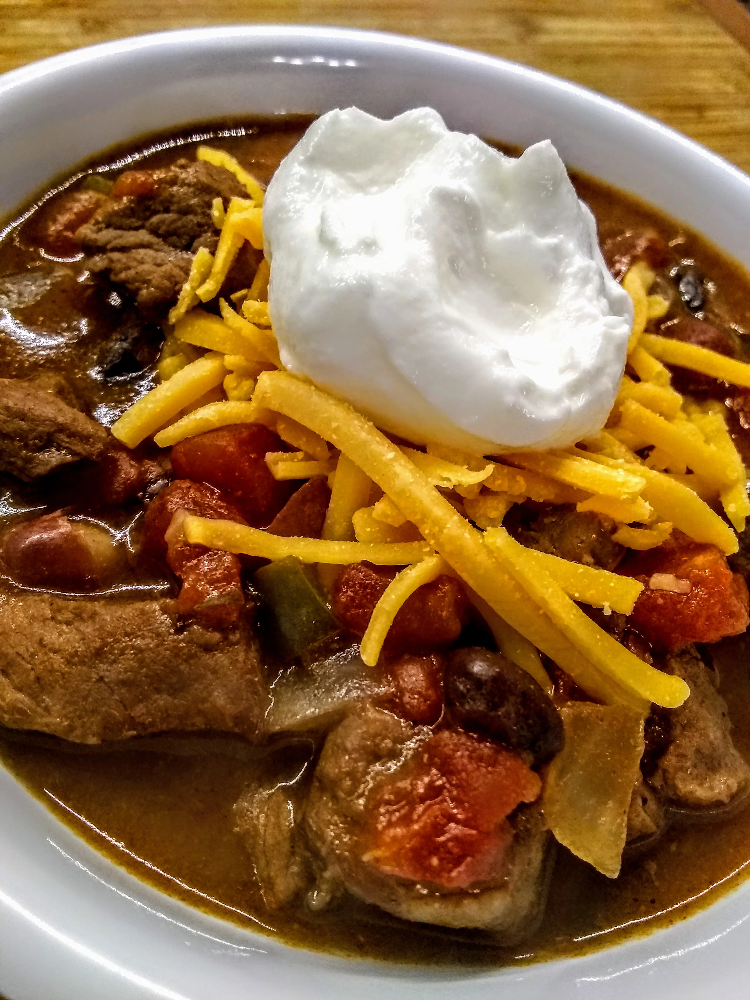

Slow-Coocked Stew Meat Chili

Prep: 20 mins
Cook: 6 hrs 5 mins
Total: 6 hrs 25 mins
Servings 8
Ingredients
- 1.5 tablespoons vegetable oil
- 0.75 pund cubed beef stew meat
- 2 tablespoons chili powder
- 1 tablespoon ground cumin
- 2 tablespoons all-purpose flour
- 1 (28 ounce) can diced tomatoes
- 1 (16 ounce) can black beans
- 1.75 cups beef broth, divided
- 1 large onion, chopped
- 1 small green or red bell pepper, chopped
- 0.25 cup chopped fresh parsley
- 2 tablespoons barbeque sauce
- 1.5 tablespoons brown sugar
- 2 cloves garlic, or more to taste, minced
- 0.75 teaspoon salt
Steps
- Heat oil in a large skillet over medium-high heat. Add stew meat and brown for 2 minutes, stirring often. Add chili powder and cumin; cook and stir until fragrant, about 1 minute. Stir in flour and cook for 1 minute more. Transfer meat to a large slow cooker.
- Add diced tomatoes, black beans, kidney beans, 1 1/2 cups beef broth, onion, bell pepper, parsley, barbecue sauce, brown sugar, garlic, and salt to the slow cooker; stir until well combined.
- Cover and cook on Low, stirring occasionally, until beef is tender, 6 to 8 hours. Thin the chili with remaining beef broth as it cooks, if consistency is too thick.
Nutrition Facts
Per Serving: 268 calories; protein 15.6g; carbohydrates 30.4g; fat 9.3g; cholesterol 23.4mg; sodium 966.9mg.